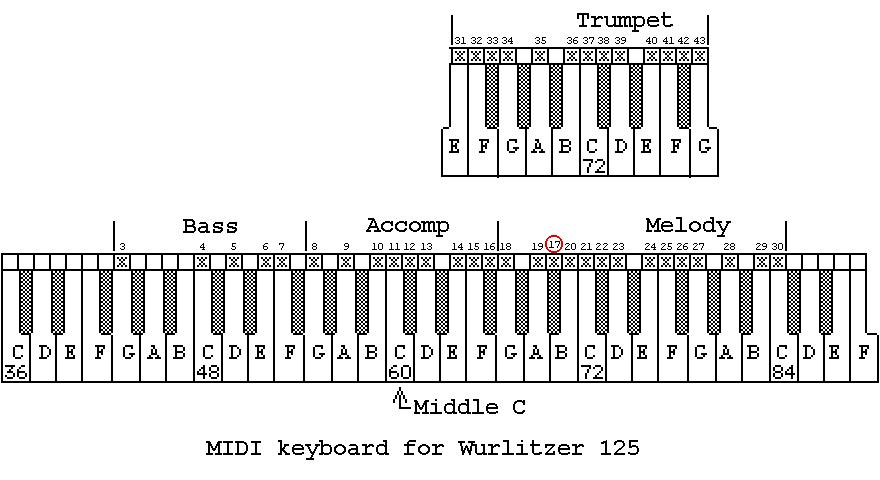

- Index
- Technical Articles
- Wurlitzer 125 Tracker Bar
Wurlitzer Band Organ 125 Tracker Bar
Wurlitzer 125 Band Organ Music and Instrument Data.
Player System:
medium: punched paper roll
transport: paper is pulled by take-up spool,
at constant revolutions per minute
frame: typically Wurlitzer Long Roll Tracker Frame (10-tune roll)
initial paper speed: typical 8.3 feet per minute, adjustable
reader: pneumatic, suction, rectangular hole, hole height = ?
width of paper: 6.00 inches
take-up spool diameter: 3.0 inches
supply spool core: 2.00 inches inside diam., 2.25 inches outside diam.
Divisions:
1 Bass - stopped flute
2 Bass - open string
3 Accompaniment - stopped flute
4 Accompaniment - open string
5 Melody - stopped flute
6 Melody - open string
7 Melody - flageolet
8 Melody - piccolo
9 Trumpet
10 Percussion and Controls
Columns:
1/ Hole number in chest
2/ Tracker bar port
3/ Description
4/ Division and rank
Chest TB Description Div - rank
1/ 2/ 3/ 4/
1 29 Mel B 8 Mel - piccolo
2 27 Mel G 8 Mel - piccolo
3 25 Mel F 8 Mel - piccolo
4 23 Mel D 8 Mel - piccolo
5 21 Mel C 8 Mel - piccolo
6 17 Mel A# 8 Mel - piccolo
7 18 Mel G 8 Mel - piccolo
8 19 Mel A 8 Mel - piccolo
9 20 Mel B 8 Mel - piccolo
10 22 Mel C# 8 Mel - piccolo
11 24 Mel E 8 Mel - piccolo
12 26 Mel F# 8 Mel - piccolo
13 28 Mel A 8 Mel - piccolo
14 30 Mel C 8 Mel - piccolo
15 7 Bass F 2 Bass - open string
16 6 Bass E 2 Bass - open string
17 5 Bass D 2 Bass - open string
18 29 Mel B 7 Mel - flageolet
19 27 Mel G 7 Mel - flageolet
20 25 Mel F 7 Mel - flageolet
21 23 Mel D 7 Mel - flageolet
22 21 Mel C 7 Mel - flageolet
23 17 Mel A# 7 Mel - flageolet
24 18 Mel G 7 Mel - flageolet
25 19 Mel A 7 Mel - flageolet
26 20 Mel B 7 Mel - flageolet
27 22 Mel C# 7 Mel - flageolet
28 24 Mel E 7 Mel - flageolet
29 26 Mel F# 7 Mel - flageolet
30 28 Mel A 7 Mel - flageolet
31 30 Mel C 7 Mel - flageolet
32 42 Trpt F# 9 Trmt
33 38 Trpt C# 9 Trmt
34 34 Trpt G 9 Trmt
35 40 Trpt E 9 Trmt
36 36 Trpt B 9 Trmt
37 32 Trpt F 9 Trmt
38 43 Trpt G 9 Trmt
39 31 Trpt E 9 Trpt
40 35 Trpt A 9 Trmt
41 39 Trpt D 9 Trmt
42 33 Trpt F# 9 Trmt
43 37 Trpt C 9 Trmt
44 41 Trpt F 9 Trmt
45 3 Bass G 2 Bass - open string
46 4 Bass C 2 Bass - open string
47 29 Mel B 5 Mel - stopped flute
48 27 Mel G 5 Mel - stopped flute
49 25 Mel F 5 Mel - stopped flute
50 16 Acc F# 4 Acc - open string
51 15 Acc F 4 Acc - open string
52 14 Acc E 4 Acc - open string
53 8 Acc G 4 Acc - open string
54 9 Acc A 4 Acc - open string
55 10 Acc B 4 Acc - open string
56 11 Acc C 4 Acc - open string
57 12 Acc C# 4 Acc - open string
58 13 Acc D 4 Acc - open string
59 29 Mel B 6 Mel - open string
60 27 Mel G 6 Mel - open string
61 25 Mel F 6 Mel - open string
62 23 Mel D 6 Mel - open string
63 21 Mel C 6 Mel - open string
64 17 Mel A# 6 Mel - open string
65 18 Mel G 6 Mel - open string
66 19 Mel A 6 Mel - open string
67 20 Mel B 6 Mel - open string
68 22 Mel C# 6 Mel - open string
69 24 Mel E 6 Mel - open string
70 26 Mel F# 6 Mel - open string
71 28 Mel A 6 Mel - open string
72 30 Mel C 6 Mel - open string
74 28 Mel A 5 Mel - stopped flute
75 26 Mel F# 5 Mel - stopped flute
75 30 Mel C 5 Mel - stopped flute
101 3 Bass G 1 Bass - stopped flute
102 4 Bass C 1 Bass - stopped flute
103 16 Acc F# 3 Acc - stopped flute
104 23 Mel D 5 Mel - stopped flute
105 21 Mel C 5 Mel - stopped flute
106 17 Mel A# 5 Mel - stopped flute
107 15 Acc F 3 Acc - stopped flute
108 18 Mel G 5 Mel - stopped flute
109 19 Mel A 5 Mel - stopped flute
110 14 Acc E 3 Acc - stopped flute
111 20 Mel B 5 Mel - stopped flute
112 22 Mel C# 5 Mel - stopped flute
113 24 Mel E 5 Mel - stopped flute
114 8 Acc G 3 Acc - stopped flute
115 9 Acc A 3 Acc - stopped flute
116 10 Acc B 3 Acc - stopped flute
117 11 Acc C 3 Acc - stopped flute
118 12 Acc C# 3 Acc - stopped flute
119 13 Acc D 3 Acc - stopped flute
120 7 Bass F 1 Bass - stopped flute
121 6 Bass E 1 Bass - stopped flute
122 5 Bass D 1 Bass - stopped flute
1 Shutoff 10
2 Snare Drum 10
44 Bass Drum 10
45 Rewind 10
Percussion: 2 keys
bass drum and cymbal
snare drum
All notes are not available; only those marked 'x' exist. Thus a chromatic scale cannot be played
and music cannot be played in any key. Only those keys where the appropriate notes exist are allowed.
